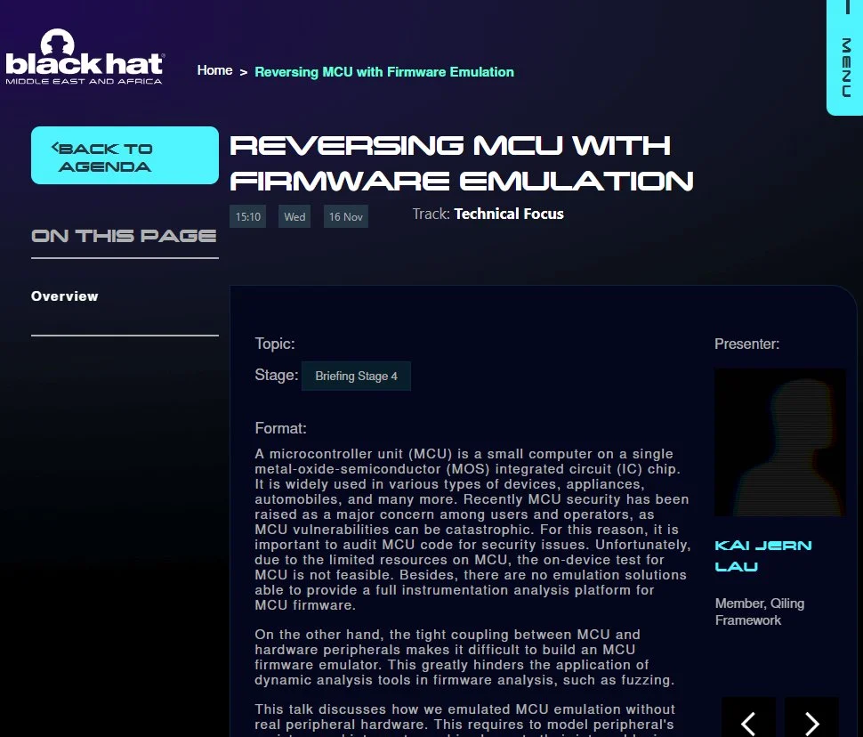

Qiling Framework
Demystifying IoT Firmware with Emulation
by chinggg
2022.11.7
Play with IoT firmware
Preparation:
- Get firmware
- download from Internet or dump physically
- Extract rootfs
binwalkis all your needsquashfs-tools,sasquatch,firmware-mod-kit
.
├── bin
├── cfg
├── dev
├── etc -> /var/etc
├── etc_ro
├── home -> /var/home
├── init -> bin/busybox
├── lib
├── mnt
├── proc
├── root -> /var/root
├── sbin
├── sys
├── tmp
├── usr
├── var
├── webroot -> var/webroot
└── webroot_ro
The QEMU way (user mode)
❯ sudo chroot . /qemu-arm-static /bin/httpd
init_core_dump 1816: rlim_cur = 0, rlim_max = 0
init_core_dump 1825: open core dump success
init_core_dump 1834: rlim_cur = 5242880, rlim_max = 5242880
Yes:
****** WeLoveLinux******
Welcome to ...
The QEMU way (system mode)
- Repack the firmware image
- Boot with QEMU
qemu-system-arm -cpu arm1176 -M versatilepb -kernel /path/to/kernelqemu-4.4.34-jessie -append "console=ttyAMA0 root=/dev/sda rootfstype=ext2 rw" -hda /path/to/rootrootfs.img -nographic
Issues at runtime:
- Missing files (configuration, shared object)
- Check error then exit
- Segmentation fault
Solutions:
- Fake environment with required file
- Function hijacking with
LD_PRELOAD straceand reverse engineering
Qiling’s Debut
From QEMU to Unicorn Engine
- Lightweight: focus on CPU emulation
- Flexible: run off the shelf without any context
- Instrumentation: register handlers for events
From Unicorn Engine to Qiling
- File Formats: ELF, PE, Mach-O, EVM, DOS
- OS Context: syscall, IO, file system
- Extension: IDA, GDB and now Radare2
Demo 1: router WebUI

Demo 2: fuzzing with ql_afl
def main(input_file, enable_trace=False):
ql = Qiling(["rootfs/bin/httpd"], "rootfs", verbose=QL_VERBOSE.DEBUG, console = True if enable_trace else False)
# save current emulated status
ql.restore(snapshot="snapshot.bin")
# return should be 0x7ff3ca64
fuzz_mem=ql.mem.search(b"CCCCAAAA")
target_address = fuzz_mem[0]
def place_input_callback(_ql: Qiling, input: bytes, _):
_ql.mem.write(target_address, input)
def start_afl(_ql: Qiling):
"""
Callback from inside
"""
ql_afl_fuzz(_ql, input_file=input_file, place_input_callback=place_input_callback, exits=[ql.os.exit_point])
ql.hook_address(callback=start_afl, address=0x10930+8)
try:
ql.run(begin = 0x10930+4, end = 0x7a0cc+4)
os._exit(0)
except:
if enable_trace:
print("\nFuzzer Went Shit")
os._exit(0)

Recent Work
Radare2 extenstion

Reversing MCU with Firmware Emulation

Thanks for reading!
Star us on GitHub
Read the docs at https://docs.qiling.io/